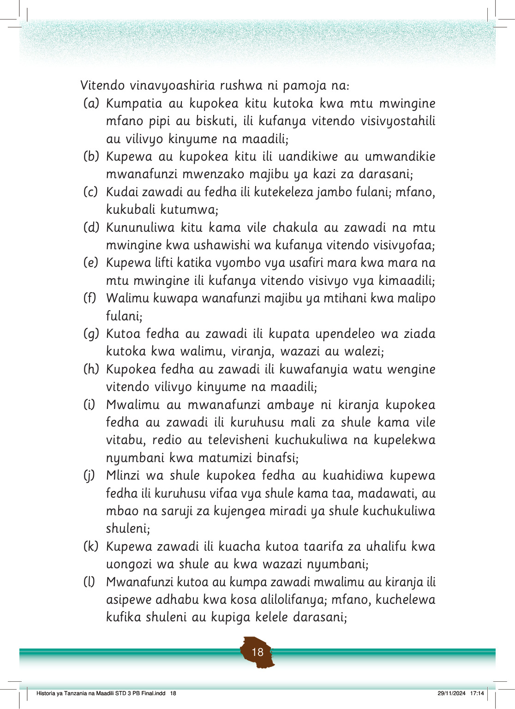

(m) Mwanafunzi au mzazi kutoa au kumpa zawadi mwalimu ili atoe alama za upendeleo kwa mwanafunzi; na
(n) Dada mlezi nyumbani kupokea fedha au mali kama simu kutoka kwa mtoto na kumruhusu aende kucheza wakati mzazi ameelekeza mtoto huyo abaki nyumbani na kukamilisha kwanza kazi za shuleni na za nyumbani kabla ya kwenda kucheza.
Vitendo vya kutoa na kupokea rushwa vina madhara kwetu na kwa jamii inayotuzunguka.
Baadhi ya madhara yanayoweza kutokea unapotoa au kupokea rushwa ni pamoja na:
(a) Kushindwa kupata wanafunzi waliofaulu mitihani kwa akili zao;
(b) Miradi ya shule kama vile madarasa kushindwa kukamilika kwa wakati;
(c) Kukosa wataalamu wenye uwezo stahiki nchini kutokana na wanafunzi kupata alama za mitihani wasizostahili;
(d) Kusababisha watu wengine kukosa haki zao kwa sababu ya kukosekana kwa usawa katika jamii;
(e) Kuwepo kwa mmomonyoko wa maadili katika jamii kwa sababu ya kulea uzembe shuleni na nyumbani; na
(f) Kukosekana kwa maendeleo katika familia au jamii kutokana na kukosa watu sahihi wa kuleta maendeleo.
Mwanafunzi ana wajibu wa kuzuia vitendo vya rushwa katika maeneo yanayomzunguka shuleni na nyumbani.
Tunaweza kufanya mambo yafuatayo ili kuepuka na kuzuia vitendo vya rushwa:
(a) Kufuata na kuheshimu sheria, kanuni na taratibu za shule na familia;
Historia ya Tanzania na Maadili STD 3 PB Final.indd 19
29/11/2024 17:14
Zoezi la 4
1.
Taja madhara mengine matatu ya vitendo vya rushwa.